Online Problems
Consider the function given by What is the domain of ?
What is the range of ?
Is onto?
yes no
We would like to restrict the codomain of the function so that it becomes onto.
We’ll describe our new codomain as the set of numbers in such that some condition
holds. Which condition gives us the largest possible codomain such that is onto?
Is one-to-one?
yes no
We would like to restrict the domain of the function , so that it becomes one-to-one.
We’ll describe our new domain as the set of points in such that some condition(s)
hold. Which condition(s) give us the largest possible domain such that is one-to-one?
Let be the function defined by
Find the component functions of in terms of , , and .
Consider the linear function given by , where and .
-
(a)
- Determine the component functions of in terms of , , and .
-
(b)
- Is one-to-one?
Yes No
-
(c)
- Is onto?
Yes No
Consider the function What is the shape of the level curve at height of ?
Empty A single line Two intersecting lines Two parallel lines Circle Ellipse Parabola Hyperbola
What is the shape of the level curve at height of ?
Empty A single line Two
intersecting lines Two parallel lines Circle Ellipse Parabola Hyperbola
What is the shape of the level curve at height of ?
Empty A single line Two
intersecting lines Two parallel lines Circle Ellipse Parabola Hyperbola
What is the shape of the level curve at height of ?
Empty A single line Two
intersecting lines Two parallel lines Circle Ellipse Parabola Hyperbola
Which of the following is the graph of ?
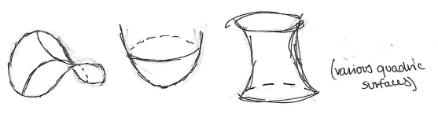
Consider the function What is the shape of the level curve at height of ?
Empty A single line Two intersecting lines Two parallel lines Circle Ellipse Parabola Hyperbola
What is the shape of the level curve at height of ?
Empty A single line Two
intersecting lines Two parallel lines Circle Ellipse Parabola Hyperbola
What is the shape of the level curve at height of ?
Empty A single line Two
intersecting lines Two parallel lines Circle Ellipse Parabola Hyperbola
What is the shape of the level curve at height of ?
Empty A single line Two
intersecting lines Two parallel lines Circle Ellipse Parabola Hyperbola
Which of the following is the graph of ?
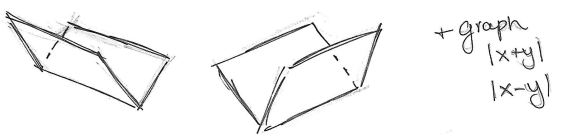
Which of the following is the graph of the ellipsoid
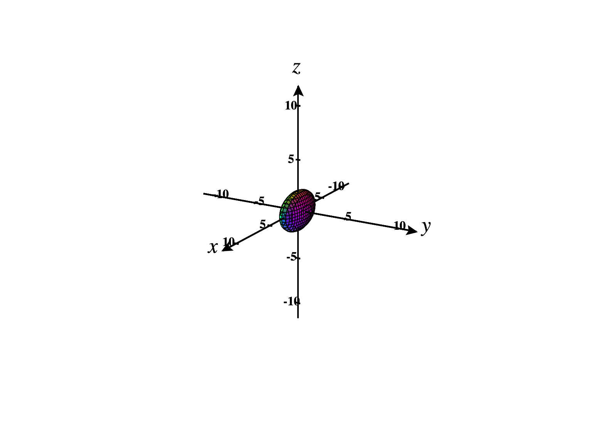 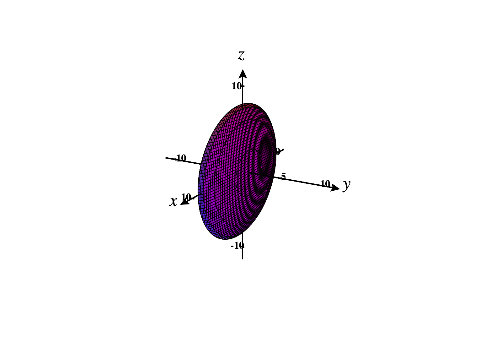
Is there a function such that the graph of is the ellipsoid above?
Yes No
Why is this impossible?
It wouldn’t be one-to-one. It wouldn’t be onto. There
would be multiple inputs with the same output. A single input would need to have
two outputs.
Classify the quadric surface defined by the equation
Ellipsoid Elliptic Paraboloid Hyperbolic Paraboloid Elliptic Cone Hyperboloid of One Sheet Hyperboloid of Two Sheets
It is centered at the point .
Which of the following is the graph of the quadric surface given above?
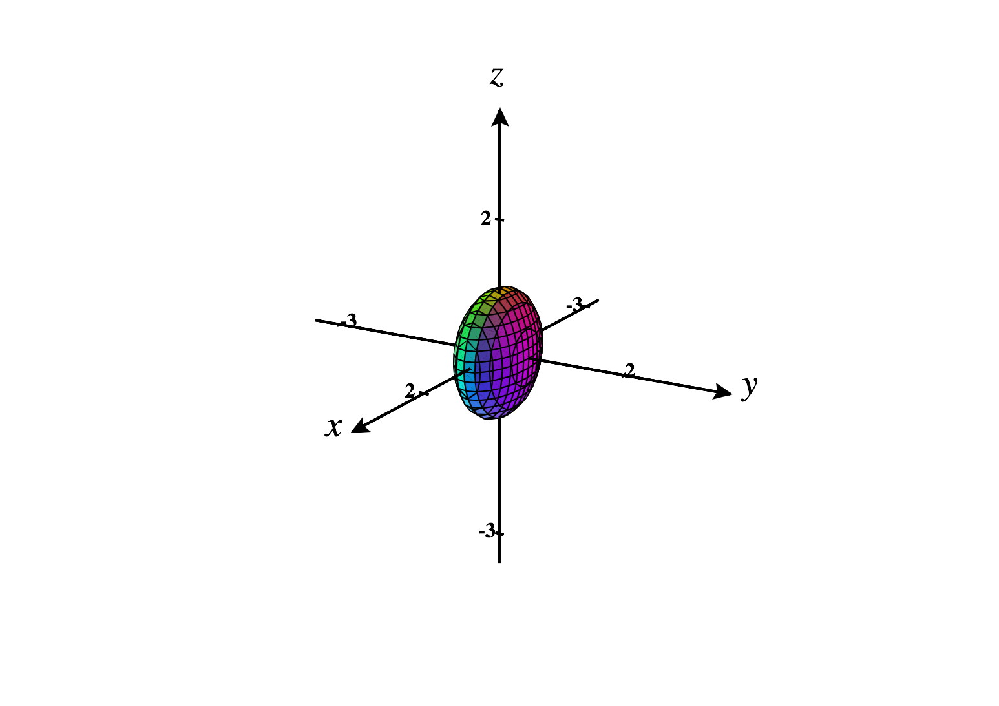 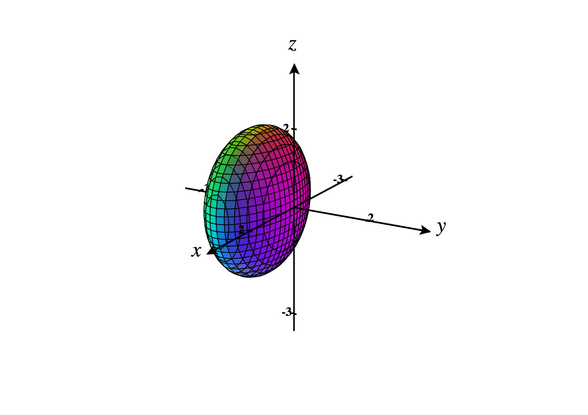 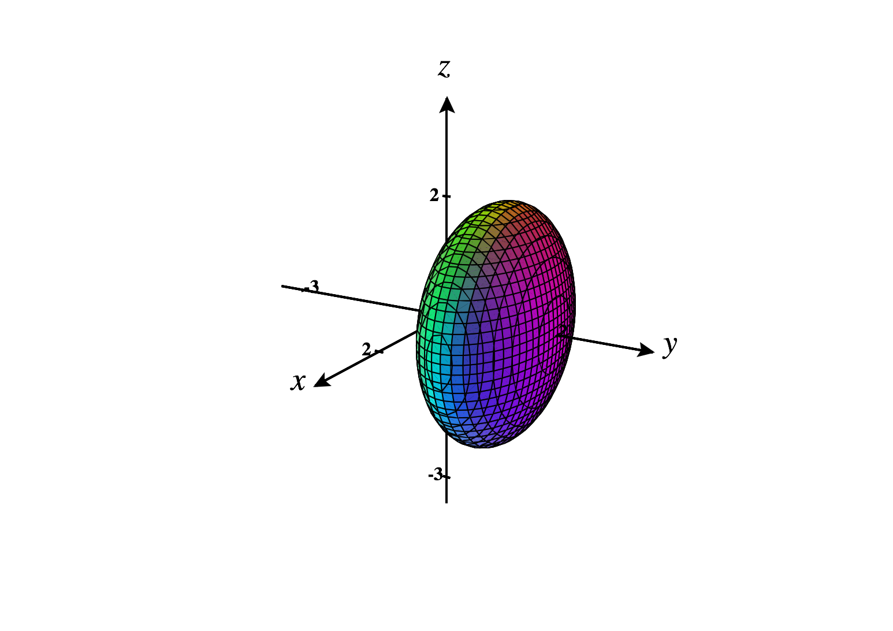 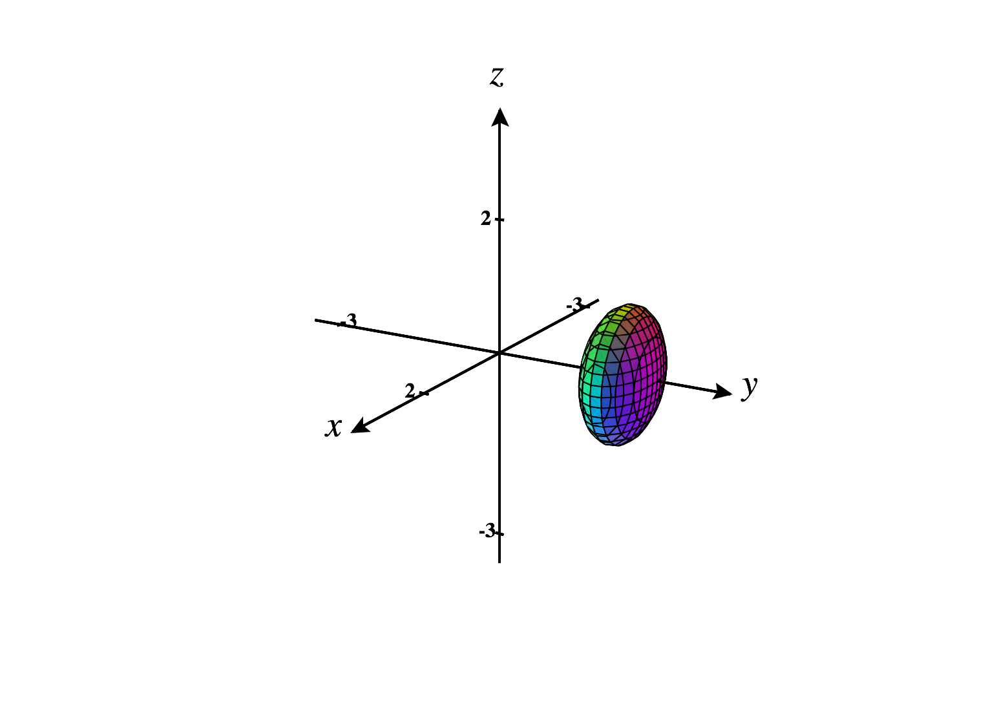
Classify the quadric surface defined by the equation
Ellipsoid Elliptic Paraboloid Hyperbolic Paraboloid Elliptic Cone Hyperboloid of One Sheet Hyperboloid of Two Sheets
It is centered at the point .
Which of the following is the graph of the quadric surface given above?
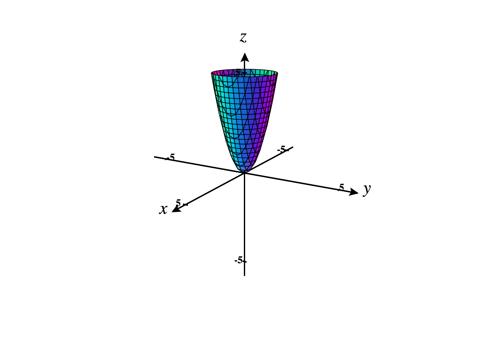 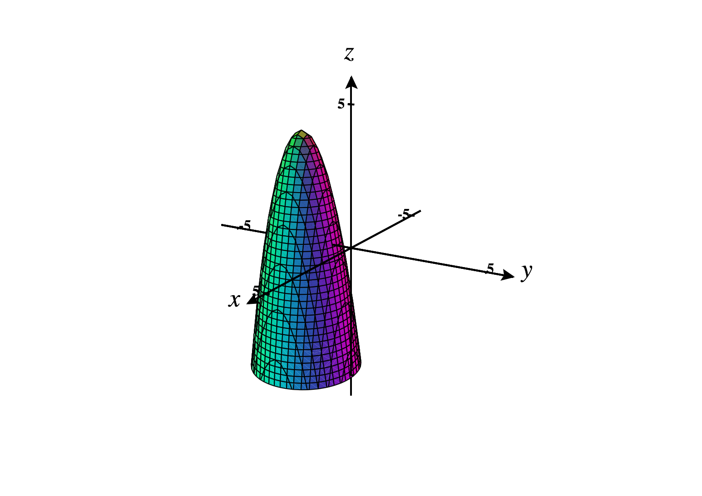 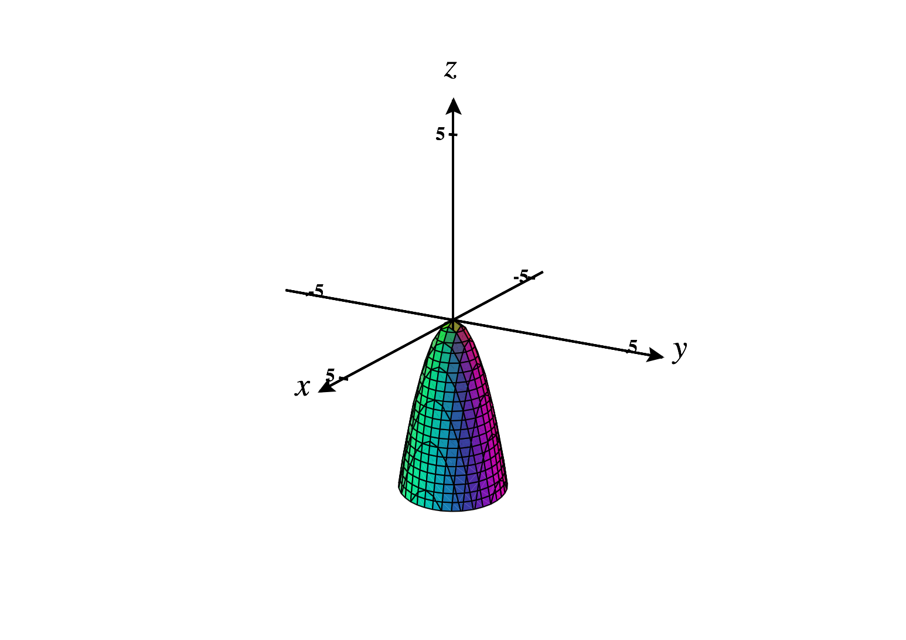 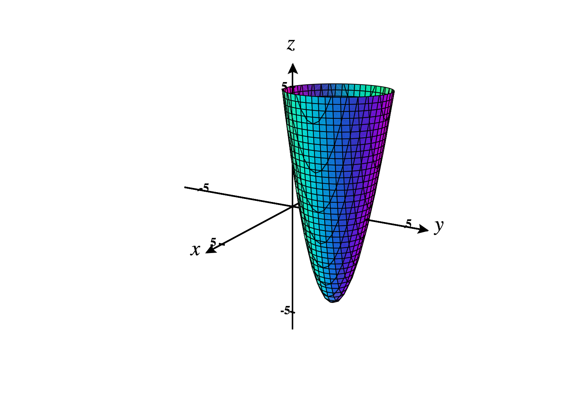
Written Problems
Consider the function
-
(a)
- What is the domain of ? Describe this domain as a region in .
-
(b)
- What is the range of ?
Consider the function
-
(a)
- Draw at least five level curves of .
-
(b)
- Use these level curves to sketch the graph of .
Draw the graph of the surface in determined by the equation Use level curves
and/or sections to justify why your drawing is correct.
Professional Problem
-
(a)
- Suppose we have a surface such that the -sections at are always . Draw
and describe this surface.
-
(b)
- Suppose we have a surface such that the level sets at are always . Draw
and describe this surface.
-
(c)
- Suppose we have a surface such that the level sets at are always given by
, for some function of and . Describe this surface, and draw the surface
for some “generic” function .